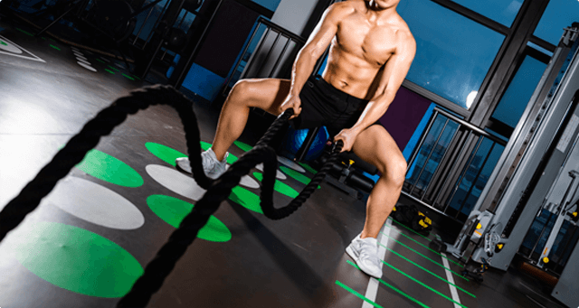
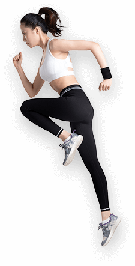
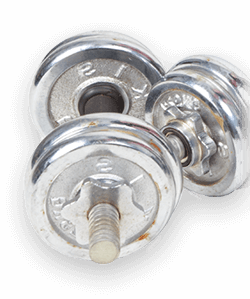

耐力VS爆发力

检测结果
耐力强，爆发力强
结果显示您十分适合从事各项体育活动，可能较同龄人有明显的体力优势。可能较同龄人有明显的体力优势。
耐力VS爆发力
检测结果
耐力强，爆发力强
结果显示您十分适合从事各项体育活动，可能较同龄人有明显的体力优势。可能较同龄人有明显的体力优势。
检测结果
中低GL食物
十分适合从事耐力相关的运动
简介
耐力和爆发力是最基本的两大运动能力，支撑着绝大对数体育运动，我们通过对这两个项目的检测，综合判断出了您的云的能力，具体细节请参考下面。
简介
耐力和爆发力是最基本的两大运动能力，支撑着绝大对数体育运动，我们通过对这两个项目的检测，综合判断出了您的云的能力，具体细节请参考下面。
检测内容
- 耐力高
- 爆发力中等
检测内容
- 碳水化合物选择中 / 低 GL 食物
- 运动提升乳酸阈效果中等
运动建议
您的耐力和爆发力均高于同龄人，属于少有的运动天才！选择兼具耐力和爆发力的项目如足球、蓝球、网球、击剑、速度滑冰、200米跑步等项目，在体力上会有明显的优势。同时，由于耐力更出众，选择耐力为主的项目（400米及以上跑步、自行车、滑雪、200米及以上游泳）也很容易取得好成绩。
运动建议
您的运动提升耐力效果较快，如果想要进一步提升耐力运动表现。参照具体运动方案会比较容易取得成效。
注：具体运动方案仅限于提高一般耐力水平（身体素质），针对专项耐力表现（如马拉松），应采用更有针对性的运动方案
对于大多数体育运动来说，可以较好地学习和理解一项运动开始于学前和小学期间，因此这个时间比较适合为儿童选择1-2项适合的运动，无论今后决定是否从事体育事业或者仅仅是兴趣爱好，鼓励儿童进行体育活动都是十分有益的。以下是根据基因结果为您推荐的体育运动，供您参考。
减肥
| FATmax方案 | RT方案 (搭配FATmax) |
HIIT方案 |
|---|---|---|
| 慢跑，自行车，游泳 | 慢跑，自行车，游泳，上肢锻炼 | 慢跑，自行车，游泳，健身课 |
| 持续中等速度，体感稍累 | 持续中等速度，体感稍累，哈哈哈 | 持续中等速度，体感稍累爱上打扫打扫打扫打扫 |
| 每周五次 | 每周1-3次 | 每周3-5次 |
| 每次45min | 除去组间休息，每次15-20分钟 | 每次32min |
| 提高脂肪氧化百分比，提高脂肪氧化百分比 | 提高脂肪氧化百分比，提高脂肪氧化百分比 | 提高脂肪氧化百分比，提高脂肪氧化百分比，提高脂肪氧化百分比 |
| 1.提高脂肪氧化百分比，提高脂肪氧化百分比。 2.提高脂肪氧化百分比，提高脂肪氧化百分比 |
1.提高脂肪氧化百分比，提高脂肪氧化百分比。 2.提高脂肪氧化百分比，提高脂肪氧化百分比 |
1.提高脂肪氧化百分比，提高脂肪氧化百分比。 2.提高脂肪氧化百分比，提高脂肪氧化百分比 3.提高脂肪氧化百分比，提高脂肪氧化百分比 |
耐力
| MICT | HIIT |
|---|---|
| 慢跑，自行车，游泳 | 慢跑，自行车，游泳，上肢锻炼 |
| 持续中等速度，体感稍累 | 持续中等速度，体感稍累，哈哈哈 |
| 提高脂肪氧化百分比，提高脂肪氧化百分比 | 提高脂肪氧化百分比，提高脂肪氧化百分比 |
| 每次45min | 除去组间休息，每次15-20分钟 |
| 1.提高脂肪氧化百分比，提高脂肪氧化百分比。 2.提高脂肪氧化百分比，提高脂肪氧化百分比 |
1.提高脂肪氧化百分比，提高脂肪氧化百分比。 2.提高脂肪氧化百分比，提高脂肪氧化百分比 |
血糖
| 有氧活动 | 力量型活动 |
|---|---|
| 慢跑，自行车，游泳 | 慢跑，自行车，游泳，上肢锻炼 |
| 持续中等速度，体感稍累 | 持续中等速度，体感稍累，哈哈哈 |
| 1.提高脂肪氧化百分比，提高脂肪氧化百分比。 2.提高脂肪氧化百分比，提高脂肪氧化百分比 |
|
| 每次45min | 除去组间休息，每次15-20分钟 |
| 每周五次 | 每周两次-20分钟 |
血糖
| 有氧活动 | 力量型活动 |
|---|---|
| 慢跑，自行车，游泳 | 慢跑，自行车，游泳，上肢锻炼 |
| 持续中等速度，体感稍累 | 持续中等速度，体感稍累，哈哈哈 |
| 1.提高脂肪氧化百分比，提高脂肪氧化百分比。 2.提高脂肪氧化百分比，提高脂肪氧化百分比 |
1.提高脂肪氧化百分比，提高脂肪氧化百分比。 2.提高脂肪氧化百分比，提高脂肪氧化百分比 |
| 每次45min | 除去组间休息，每次15-20分钟 |
| 每周五次每周五次每周五次每周五次每周五次每周五次每周五次每周五次每周大多数体育运动来说，可以较好地学习和理解一项运动开始于学前和小学期间，因此这个时间比较适合为儿童选择1-2五次每周五次每周五次 | |
对于大多数体育运动来说，可以较好地学习和理解一项运动开始于学前和小学期间，因此这个时间比较适合为儿童选择1-2项适合的运动，无论今后决定是否从事体育事业或者仅仅是兴趣爱好，鼓励儿童进行体育活动都是十分有益的。以下是根据基因结果为您推荐的体育运动，供您参考。
对于大多数体育运动来说，可以较好地学习和理解一项运动开始于学前和小学期间，因此这个时间比较适合为儿童选择1-2项适合的运动，无论今后决定是否从事体育事业或者仅仅是兴趣爱好，鼓励儿童进行体育活动都是十分有益的。以下是根据基因结果为您推荐的体育运动，供您参考。
科学依据
耐力和最大摄氧量
最大摄氧量（VO2max）是在心肺功能和全身各器官、系统充分动员的条件下，单位时间内有机吸收和利用的氧容量，它的意义在于反映人体最大有氧代谢能力，反映心肺功能的运转能力和肌肉对氧的吸收、利用能力。VO2max是目前评价有氧运动能力最常用的指标。
背景知识
我的基因位点
| 基因 | 位点 | 结果 |
|---|---|---|
| TMPRSS6 | 84198 | AA |
| TMPRSS6 | 84198 | BB |
| TMPRSS6 | 84198 | BB |
结果分析
跟腱保护
能力较强
效果中等
效果中等